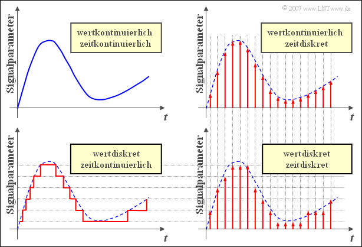
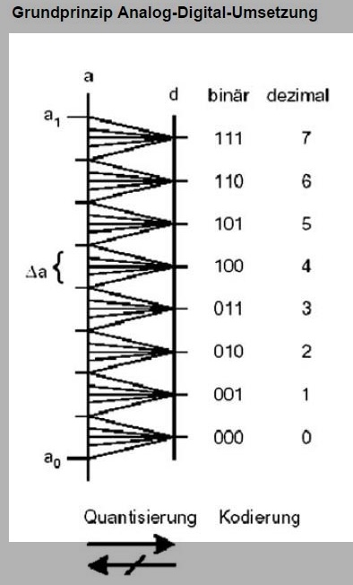
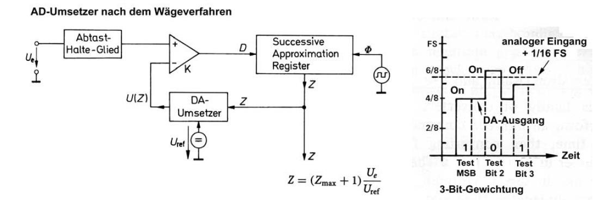
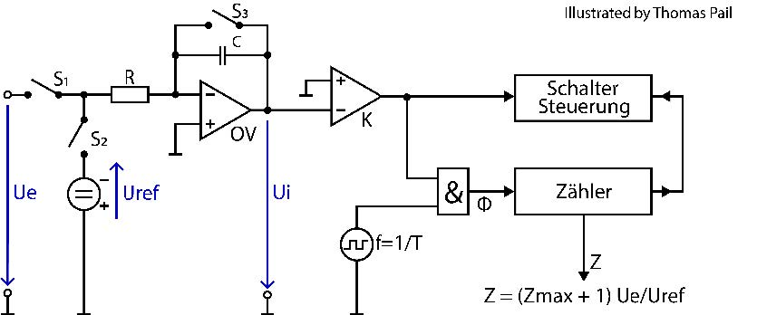

Ein Referat von Christoph S. & Michi R.
Mikrofone, Temperatursensoren oder Kameras liefern uns kontinuierliche Spannungswerte.
Mikrocontroller (Arduino, STM32) arbeiten aber nur mit diskreten Takten und Nullen & Einsen.
Der ADU (Analog-to-Digital Converter) ist der Dolmetscher zwischen diesen beiden Welten.

Aus zeitkontinuierlich wird zeitdiskret. Ein Kondensator speichert die aktuelle Spannung für einen Taktzyklus ("Schnappschuss").
Aus wertkontinuierlich wird wertdiskret. Vergleich der Spannung mit festen Referenzstufen.
Die ermittelte Stufe wird in eine Binärzahl für den Mikrocontroller übersetzt.
Der analoge Wert wird in eine Art Raster gezwängt. Dadurch geht Information verloren.
Lösung: Höhere Auflösung (z.B. 12 Bit statt 8 Bit).

Falsche Signale durch zu langsame Abtastung. Schnelle Frequenzen erscheinen plötzlich als langsame Signale.
Lösung: Anti-Aliasing-Filter & Nyquist-Shannon-Theorem:
Bevor wir in die Schaltungen gehen, unterscheiden wir zwei Grundprinzipien:
Das Signal wird gleichzeitig an alle Komparatoren angelegt. Ein Priority-Encoder liefert sofort das Ergebnis.
Probiert bitweise (von MSB zu LSB) aus, ob die interne Spannung größer oder kleiner als das Signal ist.

Ein Kondensator wird für eine feste Zeit mit dem Signal aufgeladen. Danach wird gemessen, wie lange das Entladen mit einer Referenzspannung dauert.

Tastet extrem schnell, aber nur mit 1 Bit ab. Ein digitaler Filter rechnet den schnellen 1-Bit Strom zu einem langsamen, hochauflösenden Strom zusammen.
| Architektur | Prinzip | Geschwindigkeit | Auflösung | Anwendung |
|---|---|---|---|---|
| Flash-ADC | Momentanwert | Sehr hoch | Niedrig (6-10 Bit) | Oszilloskope |
| SAR-ADC | Momentanwert | Mittel | Mittel (10-16 Bit) | Mikrocontroller |
| Dual-Slope | Integrierend | Sehr langsam | Hoch (bis 20 Bit) | Multimeter |
| Sigma-Delta | Integrierend (Oversampling) | Niedrig bis Mittel | Sehr hoch (24-32 Bit) | Audio, Sensoren |
Gibt es noch Fragen?